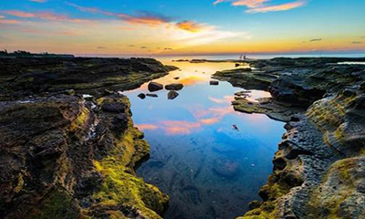
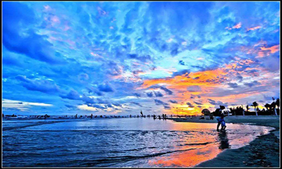
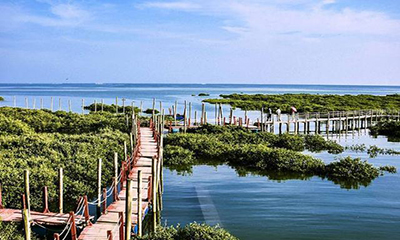
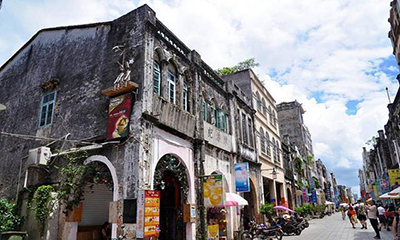
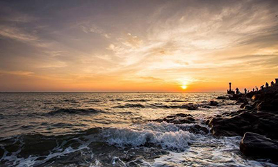
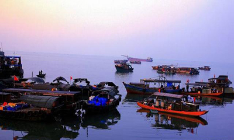
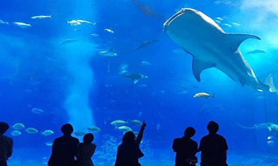

- 
- 涠洲岛
- 中国最大的死火山岛，岛上岩奇洞深，风光旖旎，民风淳朴，素有“大蓬莱”仙岛之称。景观资源丰富，有滴水丹屏、鳄鱼山火山公园，五彩滩等，观赏太阳斜照在斜阳岛的全景的最佳地点。另有位于盛堂村的法国天主教堂、三婆庙及圣母庙等人文景观，印证了中西合璧的历史足迹。岛上现还建有各种娱乐设施，是海岛探幽、海上垂钓、浴海拾贝、潜水探奇的极好去处。此外，环岛骑行也是游览岛屿的另一大特色，租上一辆自行车慢悠悠的欣赏各处风景，非常惬意。
- 门票
- 普通票:成人98元，半票:60-65岁老人
- 交通
- 在北海市内乘3路公交车到北海国际客运码头，再乘快船或慢船前往，班次为8:30-17:00，行程1-2小时（会有1-1.5小时浮动，以当时公示为准），船票根据船型约120-180元/人
Top.1
- 
- 北海银滩
- 北海市南部海滨，距北海市区8公里，在阳光的照射下，洁白、细腻的沙滩会泛出银光，故称银滩。银滩滩长平、沙细白、水温净、浪柔软，被喻为"天下第一滩"。海风拂面，最适宜感受惬意的海边生活。
- 门票
- 免费
- 交通
- 1、火车站-银滩：火车站乘20路经过19站到海滩公园站下车，步行约900米。
2、南珠汽车站-银滩：南珠汽车站乘坐21路经过32站到银滩站下车，步行约152米。
3、北部湾广场－银滩：北部湾广场站乘双层巴士旅游专线（银滩方向）经过18站到广西干部学院，步行约569米；或乘坐17路经过24站到广西干部学院，步行约569米。
4、客运中心 -银滩：客运中心站乘坐3路经过20站到广西干部学院站，步行约585米；或乘坐5路到北海高新区站，同站换乘21路或20路到达广西干部学院站，步行约600米。
Top.2
- 
- 金海湾红树林生态旅游区
- 极富滨海湿地风情和疍家民俗文化的景区，3000多亩的“海上森林”——红树林，百种鸟类、昆虫、贝类、虾、蟹等生物在此繁衍栖息，是我国罕见的海洋生物多样性保护区。还有特色红树林赶海项目，原生态耙螺、抓蟹、挖沙虫，体验渔家赶海生活。
- 门票
- 门市价108元
- 交通
- 1、客运中心—金海湾红树林：客运中心站乘12路（北中方向）经过24站到北海中学站，步行约1.9公里。
2、北部湾客运中心—金海湾红树林：北部湾客运中心站乘101路（北中方向）经过26站到北海中学站，步行约1.9公里。
3、北部湾广场—金海湾红树林：北部湾广场站乘13路或17路或19路经过3站到北海大道石子岭路口站，同站换乘18路（金海湾红树林方向）经过23站到红树林站，步行约50米。
Top.3
- 
- 百年老街
- 北海老街由两条古老的街道组成，是中国岭南地区最长的和保存最完好的骑楼街道之一。老街临街两边墙面的窗顶多为卷拱结构，卷拱外沿及窗柱顶端都有雕饰线，线条流畅、工艺精美。临街墙面部不同式样的装饰和浮雕形成了南北两组空中雕塑长廊。这些建筑临街的骑楼部分，既是道路向两侧的扩展又是铺面向外部的延伸，人们行走在骑楼下，既可遮风挡雨又可躲避烈日；骑楼的方形柱子粗重厚大，颇有古罗马建筑的风格。
- 门票
- 免费
- 交通
- 1、北部湾广场—老街：北部湾广场站乘2路（地角方向）经过2站到老街站，步行约196米。
2、客运中心站—老街：乘5路或6路（人民剧场（人民医院）方向）到经过1站到人民剧场（人民医院）站，步行约800米。
Top.4
- 
- 冠头岭
- 冠头岭位于北海市西尽端，距市区8公里，岭长3公里， 象一条青龙横卧在市区西南端， 由主峰望楼岭（前清曾设"望楼"于顶巅，海拔120米）与风门岭、丫髻岭、天马岭等山峦群体组成，东北延伸至石步岭南麓而止，同向潜脉与石步岭地角岭相连。整个山岭以形状"穹窿如冠"而得名。主峰高120米，登峰可观日出日落、万顷海涛和晚上点点渔火的迷人景色。 临海一面有海蚀平台陡岩，错落别致，千姿百态。
- 门票
- 免费
- 交通
- 1、北部湾广场—冠头岭： 北部湾广场站乘6路经过13站到冠头岭站，步行约70米。
2、路银滩—冠头岭：银滩站乘102路或17路或3路到达北部湾广场站，同站换乘6路经过13站到冠头岭站，步行约70米。
3、北海站—冠头岭：北海站乘17路或102路或16路到北部湾广场站，同站换乘6路经过13站到冠头岭站，步行约70米。
Top.5

- 桥港风情街
- 侨港曾是归国华侨聚居地小镇。如今汇集了众多美食，北海人民最喜欢来此品尝糖水、炒螺等北海本地特色和越南春卷、咖啡、卷粉等异域美食。
- 门票
- 免费
- 交通
- 1、北部湾广场—侨港风情街：北部湾广场站乘双层巴士旅游观光线（银滩方向）经过10站到四川南路口站，步行约320米。
2、新力购物广场—侨港风情街：新力购物广场站乘23路（万泉城方向）经过15站到四川南路口站，步行约320米。
3、客运中心站—侨港风情街：客运中心站乘3路（银滩方向）经过8站到四川南路口站，步行约320米。
Top.6
- 
- 外沙岛
- 外沙岛位于广西北海市的北部岸线，是离市区最近的一个小岛，外沙岛与北海半岛相距不足百米，属于北海市区的一个组成部分。外沙岛为海鲜岛，四面环水，有长达2000米的海岸线，岛上有人工海水河，而且全岛以人工海水河为中心，分列着度假村与餐饮区。外沙岛四面环海，是广西最大的海鲜集散地和中国最负盛誉的海鲜餐饮区，建筑着重体现南亚风格。风格迥异的异域文化，让游客不出境就能体验出国的感觉。
- 门票
- 免费
- 交通
- 1、北部湾广场—外沙岛：北部湾广场站乘2路（地角方向）经过2站到老街站，步行约550米。
2、客运中心站—外沙岛：乘5路或6路（人民剧场（人民医院）方向）到经过1站到人民剧场（人民医院）站，步行约1.5公里。
Top.7
- 
- 海底世界
- 北海海底世界坐落于北海海滨公园内，是北海老牌水族馆。可以看到种类丰富的海洋生物，如活体珊瑚、鲨鱼、海龟等，还有蛇和蜥蜴之类的两栖动物，以及一些珍稀生物标本，如儒艮、鲸鱼等的骨骼标本等。还拥有长长的海底观光隧道，给人置身海底的真实之感，更有美人鱼表演、人鲨大战、魔鬼鱼表演和海豹表演等精彩的演出。
- 门票
- 门市价138元
- 交通
- 1、北部湾广场—海底世界：北部湾广场站乘3路经过5站到海底世界站，步行约60米；或乘1路/15路经过6站到深圳路口站，步行约600米
2、客运中心站—海底世界：客运中心站乘3路（海滨公园方向）经过4站到海滨公园站，步行约200米，火车站乘21路（银滩方向）
Top.8
@2020-Sxy-保留所有权利
广西壮族自治区北海市桂林电子科技大学北海校区